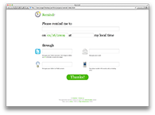
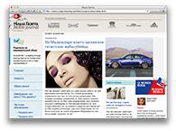
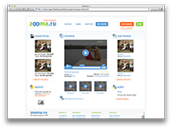
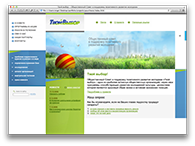

Специализация
Современная вёрстка на HTML/CSS.
HAML/SASS, Grunt, HTML5, CSS3 и другие чудеса техники.
Базовые (очень базовые) навыки программирования на JavaScript, jQuery, PHP/MySql.
Опыт вёрстки под Perl :: Mason, Ruby on Rails, Wordpress и другие фреймворки и шаблонизаторы.
Контроль версий: cvs, svn, git.
7 лет опыта удаленной работы в разных командах.
Опыт координации работы команды верстальщиков.
Основные навыки: кроссбраузерная вёрстка крупных сайтов со сложной архитектурой быстро, поддерживаемо, расширяемо, с БЭМ и без. Вёрстка сложных дизайнерских промо-сайтов. Тяжелые почтовые рассылки. Вёрстка для мобильных устройств.
Опыт работы
06.2015–сейчас — Верстальщик в «EXANTE»
01.2014–06.2015 — Верстальщик в «Undev»
11.2012–01.2014 — Верстальщик в «AltSpace»
02.2010–11.2012 — Веб-технолог в «Далее»
07.2009–01.2010 — Веб-технолог в «InVenture»
03.2007–05.2009 — Веб-технолог в «Getalime»
12.2007–01.2008 — Верстальщик в «Ewwwo.com»
01.2007–11.2007 — Руководитель отдела вёрстки в «Newmedia Stars»
01.2007—05.2007 — Верстальщик в «Newmedia Stars»
08.2006–12.2006 — Верстальщик в «Astrostar.ru»
03.2006–07.2006 — UI Developer в «Starsoft Development Labs»
2005–2006 — фриланс
Биография
Родилась в Ленинграде в 1986 г.
В 2005 г. впервые попробовала себя в веб-разработке, сначала занималась «полным циклом» создания сайтов (дизайн, вёрстка, программирование), затем сосредоточилась на клиентсайде. Первые полтора года фрилансила, потом работала в веб-студиях и агентствах Санкт-Петербурга и Москвы. Последние 7 лет работаю в московских компаниях удалённо из Санкт-Петерурга.
В составе российского крыла Web Standards Group занималась продвижением веб-стандартов в России, принимала участие в подготовке конференций РИТ-2007, ClientSide-2007, РИТ-2008, несколько лет состояла в жюри технологического конкурса http://webhitech.ru/. С 2009 г. в качестве волонтёра участвую в проведении конференций Web Standards Days. Делала доклады на ClientSide-2007 и Web Standards Days-2010 (Москва).
В 2013 г. выпустилась из СЗИП СПБГУТД, где изучала издательское дело и редактирование. C 2010 г. подрабатываю литературным редактором для http://web-standards.ru. Совместно с Вадимом Макеевым и Алексеем Симоненко веду подкаст «Веб-стандарты».
Контакты
Портфолио
Проекты AltSpace (Digital October Group), 2012-2013 гг.
- Портфолио AltSpace / altspace.com (2013) для AltSpace
- Портфолио агенства AltSpace
- JS — Павел Зырянов
- Вёрстка десктопной и мобильной версии
- Fry Reads Onegin / fryreadsonegin.com (2013) для AltSpace
- Промо-страница аудиокниги «Евгений Онегин» в начитке Стивена Фрая
- JS — Павел Зырянов
- Вёрстка промо-страницы
- «Короче» / kgd-filmfestival.ru (2013) для AltSpace
- Сайт Международного кинофестиваля короткометражного кино «Короче»
- JS — Олег Сидоров
- Вёрстка десктопной и мобильной версии
Проекты интернет-агентства «Dalee», 2009–2013 гг.
В «Далее» над вёрсткой работает команда технологов. Я поместила в портфолио те проекты, в которых делала большую часть вёрстки. Помимо того, я принимала участие в работе над проектами «МегаФона», «Диснея» и др. С более подробным списком работ агенства можно ознакомиться на http://www.dalee.ru/.
- «Live Site Sochi 2014» / ls.rt.ru (2013) для Dalee
- Сайт в поддержку живых трансляций Олимпиады-2014
- Сделано в команде с другими верстальщиками
- Раскладка сайта, главная страница, несколько типов внутренних
- Промо Angry Birds: Samsung Smart TV / samsung.dev.dalee.ru/ru/angry/ (2012) для Dalee
- Промо-страница игры Angry Birds на Samsung Smart TV
- JS — Константин Переверзев
- Вёрстка под параллакс-эффект
- Портфолио «Далее» / dalee.ru (2012) для Dalee
- Сайт-портфолио агентства «Далее»
- Сделано в команде с другими верстальщиками
- Раскладка сайта, главная страница, несколько внутренних
- Сайт интернет-заказа из ресторанов «Росинтер» / dostavka.rosinter.ru (2011) для Dalee
- Сайт доставки еды из ресторанов группы «Росинтер»
- Сделано в команде с другими верстальщиками
- Раскладка, большинство страниц. Поддержка IE6+
- Сайт сотового оператора «Skylink» / skylink.ru (2010) для Dalee
- Сайт и интернет-магазин сотового оператора «Skylink»
- Сделано в команде с другими верстальщиками
- Раскладка, большинство страниц. Поддержка IE6+
Проекты для инкубатора «InVenture», 2009 г.
- «Покупатор.ру» / pokupator.ru (2009) для InVenture, прекратил работу
- Инновационный агрегатор интернет-магазинов. Немного о разработке
- Около 100 макетов, несколько версий дизайна
- «SMLXL.me» / smlxl.me (2009) для InVenture, прекратил работу
- Поисковик по футболкам в московских магазинах
- Работа совместно с Денисом Егоровым, в статических макетах оставлен только мой код
- Полный рефакторинг верстки
Проекты для «Getalime», 2007–2009 г.
- «Typochat» / typochat.com (2009) для Getalime, прекратил работу
- Чат с бизнес-функциями. Описание разработки
- Веб-приложение с версией для iPhone
- «Remindr» / remindr.info (2008) для Getalime, прекратил работу
- 
- Сервис для напоминаний
- This application has been written as a part of the Rails Rumble contest
- «Живой Код» / livecode.ru (2008) для Getalime, прекратил работу
- Сервис для создания и хранения кваркодов
- Более 33 различных макетов
- «Aroundme» / aroundme.ru (2008) для Getalime, прекратил работу
- Городское сообщество Aroundme.ru
- Более 60 различных макетов
- «SMSPlat» / smsplat.ru (2008) для Getalime; не был запущен
- СМС-биллинг
- Всего 21 макет
- «Revolution» / revolution-press.ru (2008) для Getalime
- Журнал об элитных часах
- Всего 11 макетов
- «Viva! — Звезда в школе» / vivamag.ru/vivastars (2008) для Getalime
- Специальный проект журнала Viva! «Звезда в школе».
- 2 варианта дизайна
- «Prophotos» / prophotos.ru (2007) для Getalime, сменили дизайн
- Профессионально о фотографии
- Всего 32 различных макета
- «Наша Газета» / nashagazeta.ch (2007) для Getalime
- 
- Наша Газета — русско-швейцарский дайджест
- Всего 11 различных макетов
Разные ранние работы, 2005–2007 гг.
- «TV Click» / tvclick.ru (2007) сменили дизайн
- Интернет-телевидение
- 18 различных макетов
- «Tolkien.su» / tolkien.su (2007)
- Портал, посвящённый творчеству Дж. Р. Р. Толкина
- Русская Служба Новостей (2007) / rusnovosti.ru для Newmedia Stars; сменили дизайн
- Радио «Русская Служба Новостей»
- 10 различных макетов
- Zooma.ru (2007) / zooma.ru так и не был запущен
- 
- Видеоконкурсы
- 6 различных макетов
- «Гастарбайтер» и «Метро 2033» / gastarbaiter.ru, metro2033.ru (2007) для Newmedia Stars, прекратили работу
- Официальные сайты книг Эдуарда Багирова «Гастарбайтер»
и Дмитрия Глуховского «Метро 2033» - «Твой выбор» / yourchoice.ru (2005) прекратил работу
- 
- Общественный совет в поддержку позитивного развития молодежи
- Резина 1024+
Статьи и доклады
- «Как воспитать дизайнера», статья, 2007 г.
- «Мечты и реальность. Прощай CSS3, здравствуй IE6», доклад, 2010 г.
- «Engelside», блог на профессиональную тему, 2007–2010 г.
- «Сделайте мне красиво! №21», подкаст, 2011 г.